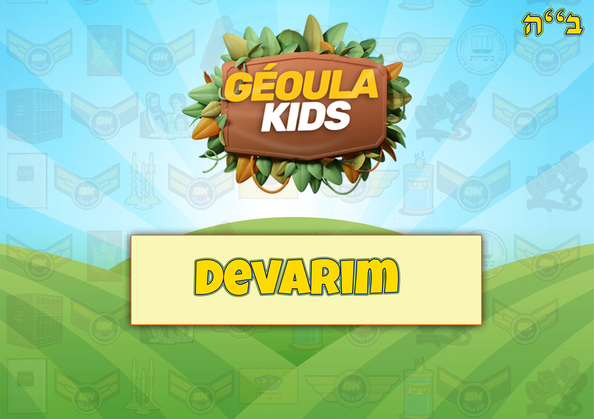
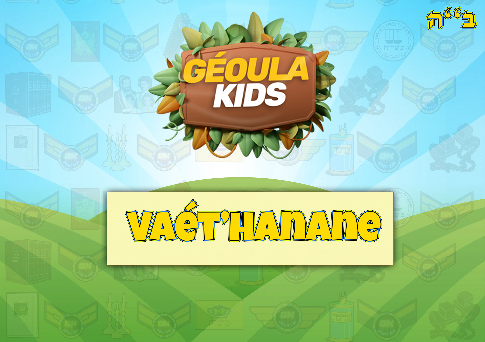
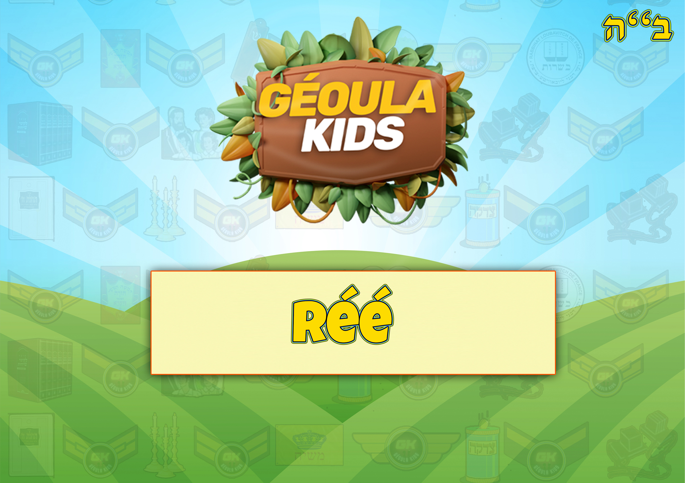
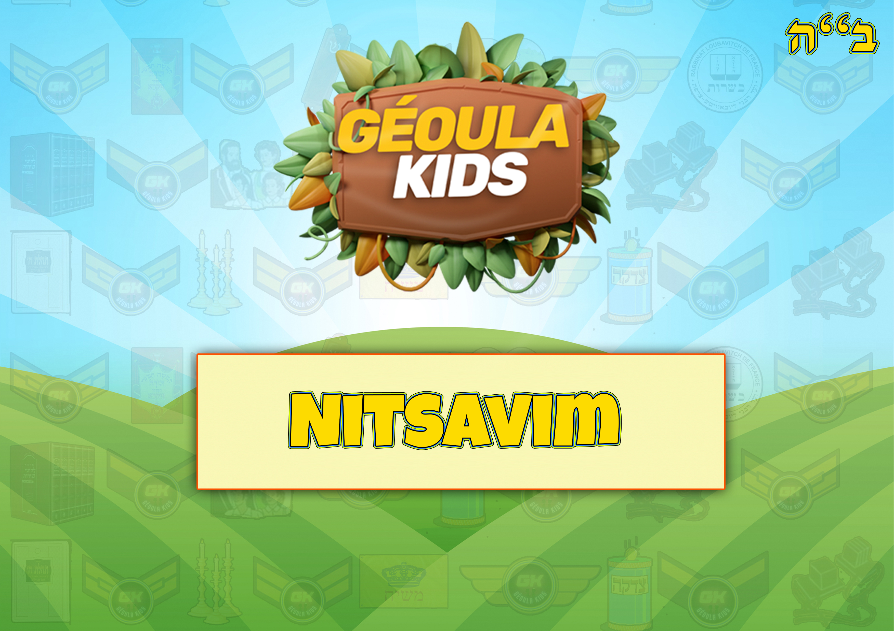
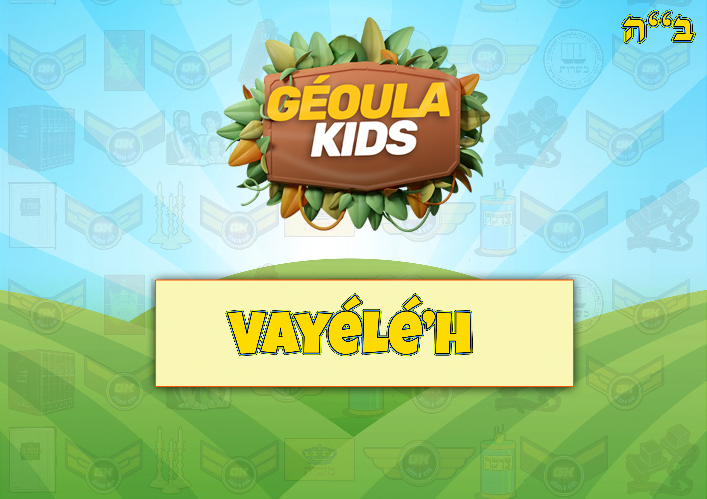
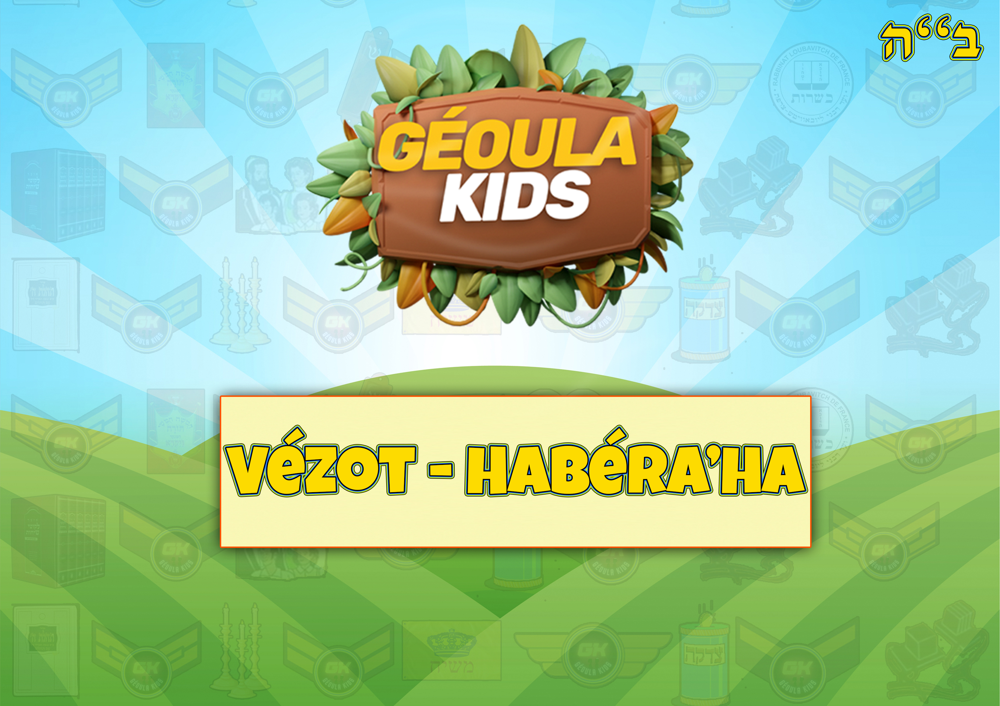

Accueil
Missions Géoulatik
Tirages passés
Tirages à venir
Jeux par Séfér
Béréchit
Chémot
Vayikra
Bamidbar
Dévarim
Feuillets Hébdomadaires
Béréchit
Chémot
Vayikra
Bamidbar
Dévarim
Les Histoires de Moré Yoni
Le Baal Chem Tov
Le Maguid de Mézéritch
Le Noam Élimélé'h
Rabbi Zoucha de Anipoly
Rabbi Yaacov Yosséf
Activités
Fêtes
Learn & Kiff
Mon compte
La Paracha de Devarim

La Paracha de Vaethanan

La Paracha de Ekev
La Paracha de Réé

La Paracha de choftim
La Paracha de Ki Tetsé
La Paracha de Ki Tavo
La Paracha de Nitzavim

La Paracha de Vayélech

La Paracha de Haazinu
La Paracha de Vezot Haberakha
